Train a combined model with global training and evaluate its predictions
This notebook uses multiple types of histograms, trains a single-histogram classifier for each of them, combines the output and assesses the performance of this combined model.
### imports
# external modules
import os
import sys
import numpy as np
import matplotlib as mpl
import matplotlib.pyplot as plt
# local modules
sys.path.append('../utils')
import csv_utils as csvu
import json_utils as jsonu
import dataframe_utils as dfu
import hist_utils as hu
import autoencoder_utils as aeu
import plot_utils as pu
import generate_data_utils as gdu
import refruns_utils as rru
# import general source
sys.path.append('../src')
sys.path.append('../src/classifiers')
sys.path.append('../src/cloudfitters')
import Model
import ModelInterface
import HistStruct
import DataLoader
import PlotStyleParser
# import classifiers
import AutoEncoder
import TemplateBasedClassifier
import NMFClassifier
import LandauClassifier
import MomentClassifier
# import combination methods
import SeminormalFitter
2022-07-26 17:23:22.471603: W tensorflow/stream_executor/platform/default/dso_loader.cc:64] Could not load dynamic library 'libcudart.so.11.0'; dlerror: libcudart.so.11.0: cannot open shared object file: No such file or directory; LD_LIBRARY_PATH: /cvmfs/sft.cern.ch/lcg/releases/MCGenerators/thepeg/2.2.1-8d929/x86_64-centos7-gcc8-opt/lib/ThePEG:/cvmfs/sft.cern.ch/lcg/releases/MCGenerators/herwig++/7.2.1-f3599/x86_64-centos7-gcc8-opt/lib/Herwig:/cvmfs/sft.cern.ch/lcg/views/LCG_101swan/x86_64-centos7-gcc8-opt/lib/python3.9/site-packages/torch/lib:/cvmfs/sft.cern.ch/lcg/views/LCG_101swan/x86_64-centos7-gcc8-opt/lib/python3.9/site-packages/tensorflow:/cvmfs/sft.cern.ch/lcg/views/LCG_101swan/x86_64-centos7-gcc8-opt/lib/python3.9/site-packages/tensorflow/contrib/tensor_forest:/cvmfs/sft.cern.ch/lcg/views/LCG_101swan/x86_64-centos7-gcc8-opt/lib/python3.9/site-packages/tensorflow/python/framework:/cvmfs/sft.cern.ch/lcg/releases/java/8u222-884d8/x86_64-centos7-gcc8-opt/jre/lib/amd64:/cvmfs/sft.cern.ch/lcg/views/LCG_101swan/x86_64-centos7-gcc8-opt/lib64:/cvmfs/sft.cern.ch/lcg/views/LCG_101swan/x86_64-centos7-gcc8-opt/lib:/cvmfs/sft.cern.ch/lcg/releases/gcc/8.3.0-cebb0/x86_64-centos7/lib:/cvmfs/sft.cern.ch/lcg/releases/gcc/8.3.0-cebb0/x86_64-centos7/lib64:/cvmfs/sft.cern.ch/lcg/releases/binutils/2.30-e5b21/x86_64-centos7/lib:/usr/local/lib/:/cvmfs/sft.cern.ch/lcg/releases/R/3.6.3-dfb24/x86_64-centos7-gcc8-opt/lib64/R/library/readr/rcon
2022-07-26 17:23:22.471647: I tensorflow/stream_executor/cuda/cudart_stub.cc:29] Ignore above cudart dlerror if you do not have a GPU set up on your machine.
### define titles and axis properties for figures
plotstyleparser = PlotStyleParser.PlotStyleParser('plotstyle.json')
titledict = plotstyleparser.get_title()
xaxtitledict = plotstyleparser.get_xaxtitle()
yaxtitledict = plotstyleparser.get_yaxtitle()
for key in yaxtitledict.keys(): yaxtitledict[key] += ' (normalized)' # if normalized
extratextdict = plotstyleparser.get_extratext()
### define run properties
# in this cell all major run properties are going to be set,
# e.g. what runs to train on and what runs to test on
# define core test set of bad runs
badrunsls = {'2017':
{
"297287":[[-1]],
"297288":[[-1]],
"297289":[[-1]],
"299316":[[-1]],
"299317":[[-1]],
"299318":[[-1]],
"299324":[[-1]],
"299325":[[-1]],
"299326":[[-1]],
"300373":[[-1]],
"300374":[[-1]],
"300397":[[-1]],
"300398":[[-1]]
}
}
# set year to use
year = '2017'
# set histogram names to use
histnames = ([
#'chargeInner_PXLayer_1',
'chargeInner_PXLayer_2',
'chargeInner_PXLayer_3',
#'chargeInner_PXLayer_4',
#'charge_PXDisk_+1','charge_PXDisk_+2','charge_PXDisk_+3',
#'charge_PXDisk_-1','charge_PXDisk_-2','charge_PXDisk_-3',
])
# redefine badrunsls for this year only
badrunsls = badrunsls[year]
print('selected runs/lumisections for training: all')
selected runs/lumisections for training: all
### read the data based on the configuration defined above
readnew = True
if readnew:
### add the histograms
# initializations
dloader = DataLoader.DataLoader()
histstruct = HistStruct.HistStruct()
# loop over the histogram types to take into account
for histname in histnames:
print('adding {}...'.format(histname))
# read the histograms from the correct csv files
filename = '../data/DF'+year+'_'+histname+'.csv'
df = dloader.get_dataframe_from_file( filename )
# define slice to remove under- and overflow bins
cropslices = [slice(1,-1)]
# add the dataframe to the histstruct
histstruct.add_dataframe( df, cropslices=cropslices )
print('found {} histograms'.format(len(histstruct.runnbs)))
### add masks
histstruct.add_dcsonjson_mask( 'dcson' )
histstruct.add_goldenjson_mask('golden' )
histstruct.add_highstat_mask( 'highstat' )
histstruct.add_stat_mask( 'lowstat', max_entries_to_bins_ratio=100 )
nbadruns = 0
histstruct.add_json_mask( 'bad', badrunsls )
# special case for bad runs: add a mask per run (different bad runs have different characteristics)
nbadruns = len(badrunsls.keys())
for badrun in badrunsls.keys():
histstruct.add_json_mask( 'bad{}'.format(badrun), {badrun:badrunsls[badrun]} )
print('created a histstruct with the following properties:')
print('- number of histogram types: {}'.format(len(histstruct.histnames)))
print('- number of lumisections: {}'.format(len(histstruct.lsnbs)))
print('- masks: {}'.format(list(histstruct.masks.keys())))
if not readnew:
histstruct = HistStruct.HistStruct.load( 'histstruct_global_20220201.zip', verbose=False )
nbadruns = len([name for name in list(histstruct.masks.keys()) if ('bad' in name and name!='bad')])
print('loaded a histstruct with the following properties:')
print(histstruct)
adding chargeInner_PXLayer_2...
INFO in DataLoader.get_dataframe_from_file: loading dataframe from file ../data/DF2017_chargeInner_PXLayer_2.csv...
INFO in DataLoader.get_dataframe_from_file: sorting the dataframe...
INFO in DataLoader.get_dataframe_from_file: loaded a dataframe with 225954 rows and 16 columns.
adding chargeInner_PXLayer_3...
INFO in DataLoader.get_dataframe_from_file: loading dataframe from file ../data/DF2017_chargeInner_PXLayer_3.csv...
INFO in DataLoader.get_dataframe_from_file: sorting the dataframe...
INFO in DataLoader.get_dataframe_from_file: loaded a dataframe with 225954 rows and 16 columns.
found 225954 histograms
created a histstruct with the following properties:
- number of histogram types: 2
- number of lumisections: 225954
- masks: ['dcson', 'golden', 'highstat', 'lowstat', 'bad', 'bad297287', 'bad297288', 'bad297289', 'bad299316', 'bad299317', 'bad299318', 'bad299324', 'bad299325', 'bad299326', 'bad300373', 'bad300374', 'bad300397', 'bad300398']
### plot the training and/or test sets
doplot = True
if doplot:
index_mask = np.random.choice( np.arange(len(histstruct.get_lsnbs())), size=20, replace=False )
histstruct.add_index_mask( 'random_plotting', index_mask )
# bad test runs
for badrun in badrunsls.keys():
fig,axs = histstruct.plot_histograms( masknames=[['dcson','highstat','random_plotting'],['dcson','highstat','bad{}'.format(badrun)]],
labellist = ['Example histograms','Run {}'.format(badrun)],
colorlist = ['blue','red'],
transparencylist = [0.1,1.],
ncols=3,
opaque_legend=True,
titledict = titledict, titlesize=15,
physicalxax = True,
xaxtitledict = xaxtitledict, xaxtitlesize=17,
yaxtitledict = yaxtitledict, yaxtitlesize=17,
ymaxfactor = 1.2,
legendsize = 14
)
# stylistic modifications
counter = -1
for i in range(axs.shape[0]):
for j in range(axs.shape[1]):
counter += 1
if counter>=len(histstruct.histnames): break
ax = axs[i,j]
pu.add_cms_label( ax, pos=(0.02,1.01), extratext='Preliminary', fontsize=16 )
pu.add_text( ax, extratextdict[histstruct.histnames[counter]], (0.95,0.6), fontsize=15, horizontalalignment='right' )
pu.add_text( ax, '2017 (13 TeV)', (1,1.01), fontsize=14, horizontalalignment='right' )
fig.subplots_adjust(wspace=0.3, hspace=0.3)
histstruct.remove_mask('random_plotting')
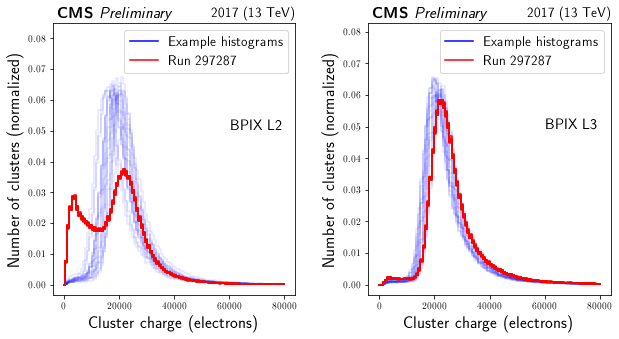
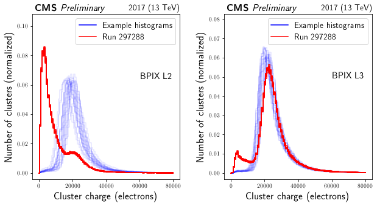
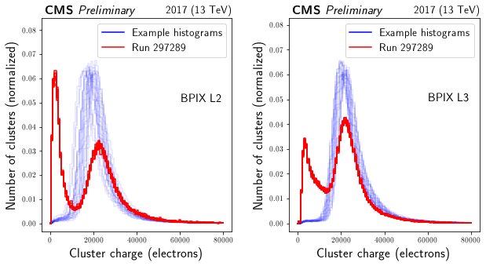
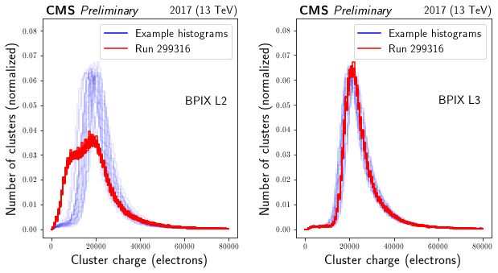
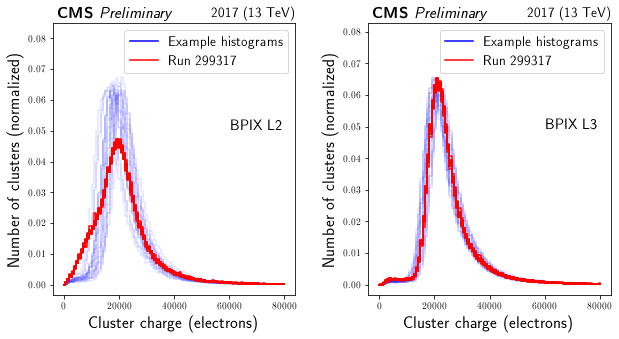
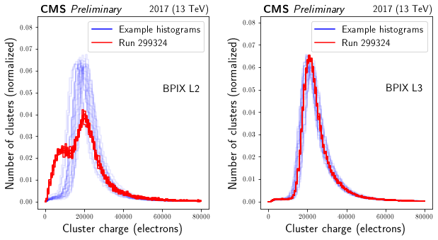
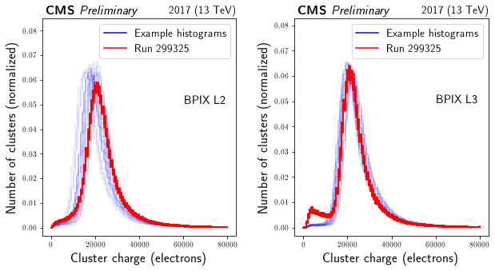
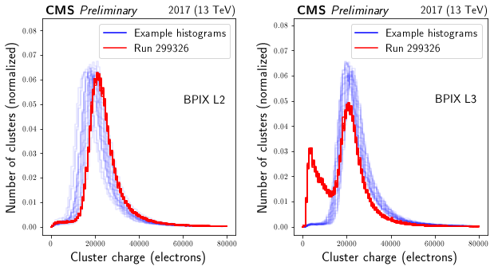
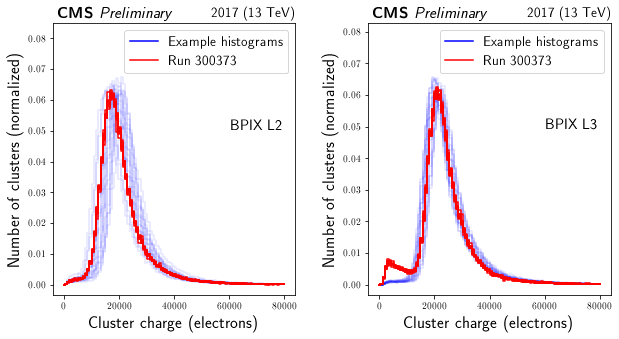
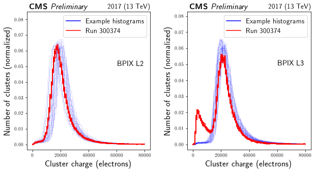
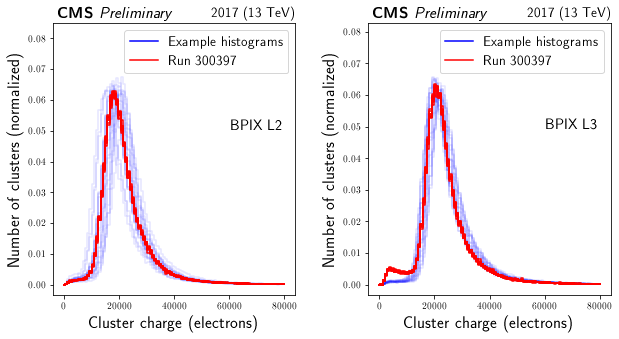
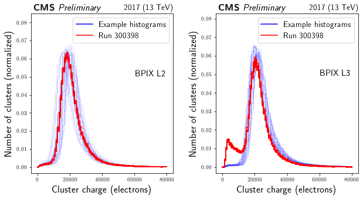
### define a good test set as averages from training set
npartitions = 50
for histname in histstruct.histnames:
histograms = hu.averagehists( histstruct.get_histograms( histname=histname, masknames=['dcson','highstat']), npartitions )
histstruct.add_exthistograms( 'partitions', histname, histograms, overwrite=True )
### make a plot of the good test set
doplot = True
if doplot:
fig,axs = histstruct.plot_histograms( histograms=[histstruct.get_histograms(setnames=['partitions'])],
labellist = ['Good test set'],
colorlist = ['blue'],
transparencylist = [0.1],
ncols=3,
opaque_legend=True,
titledict = titledict, titlesize=15,
physicalxax = True,
xaxtitledict = xaxtitledict, xaxtitlesize=17,
yaxtitledict = yaxtitledict, yaxtitlesize=17,
#ymaxfactor = 1.2,
legendsize = 14
)
# stylistic modifications
counter = -1
for i in range(axs.shape[0]):
for j in range(axs.shape[1]):
counter += 1
if counter>=len(histstruct.histnames): break
ax = axs[i,j]
pu.add_cms_label( ax, pos=(0.02,1.01), extratext='Preliminary', fontsize=16 )
pu.add_text( ax, extratextdict[histstruct.histnames[counter]], (0.95,0.6), fontsize=15, horizontalalignment='right' )
pu.add_text( ax, '2017 (13 TeV)', (1,1.01), fontsize=14, horizontalalignment='right' )
fig.subplots_adjust(wspace=0.3, hspace=0.3)
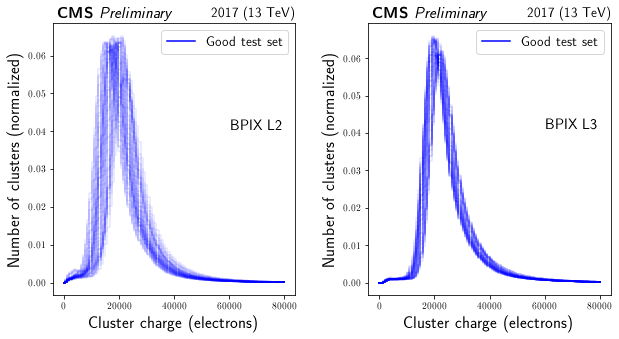
### print some numbers
print(len(histstruct.get_lsnbs()))
print(len(histstruct.get_lsnbs(masknames=['dcson'])))
print(len(histstruct.get_lsnbs(masknames=['dcson','highstat'])))
trainingmasks = ['dcson','highstat']
print(len(histstruct.get_lsnbs(masknames=trainingmasks)))
225954
215144
211171
211171
### define and train an autoencoder for each element
classifymethod = 'nmf'
modelname = classifymethod
if modelname in histstruct.modelnames:
raise Exception('WARNING: modelname "{}" is already present in histstruct.'.format(modelname)
+' Choose a different name or remove the duplicate.')
model = ModelInterface.ModelInterface(histstruct.histnames)
classifiers = {}
if classifymethod == 'autoencoder':
for histname in histstruct.histnames:
print('building Autoencoder model for histogram type {}'.format(histname))
hists = histstruct.get_histograms(histname=histname, masknames=['dcson','highstat'])
print('size of training set: {}'.format(hists.shape))
# choose whether to save the model
modelname = modelbasename+'_'+histname+'.h5'
modelname = os.path.join(modelloc, modelname)
if not save: modelname = '' # empty string means do not save models
# train the model
(aemodel, history) = aeu.train_simple_autoencoder(hists,
nepochs=20,
modelname=modelname,
batch_size=2000,
shuffle=True,
returnhistory=True
)
# make a loss plot
fig,ax = pu.plot_loss(history, xaxtitlesize=15, yaxtitlesize=15, legendsize=15, doshow=False)
pu.add_cms_label( ax, pos=(0.02,1.01), extratext='Preliminary', fontsize=16 )
pu.add_text( ax, '2017 (13 TeV)', (1,1.01), fontsize=14, horizontalalignment='right' )
pu.add_text( ax, pu.make_text_latex_safe(histname), (0.95,0.6), fontsize=15, horizontalalignment='right' )
plt.show()
# add the model to the histstruct
classifiers[histname] = AutoEncoder.AutoEncoder( model=aemodel )
if classifymethod == 'templates':
for histname in histstruct.histnames:
hists = histstruct.get_histograms(histname=histname, masknames=['dcson','highstat'])
hists = hu.averagehists( hists, 25 )
classifier = TemplateBasedClassifier.TemplateBasedClassifier()
classifier.train( hists )
classifiers[histname] = classifier
if classifymethod == 'nmf':
for histname in histstruct.histnames:
print('building NMF model for histogram type {}'.format(histname))
hists = histstruct.get_histograms( histname=histname, masknames=['dcson','highstat'])
# option: reduce size of training set by choosing randoms
random_indices = np.random.choice(len(hists), size=int(5e4), replace=False)
hists = hists[random_indices]
print('size of training set: {}'.format(hists.shape))
classifier = NMFClassifier.NMFClassifier( ncomponents=3, nmax=10 )
classifier.train( hists )
classifiers[histname] = classifier
if classifymethod == 'landaufit':
print('initializing Landau fit classifier')
classifier = LandauClassifier.LandauClassifier( dogauss=True )
for histname in histstruct.histnames:
classifiers[histname] = classifier
if classifymethod == 'moments':
for histname in histstruct.histnames:
print('calculating moments for histogram type {}'.format(histname))
hists = histstruct.get_histograms(histname=histname, masknames=['dcson','highstat'])
classifier = MomentClassifier.MomentClassifier( orders=[1,2] )
classifier.train(hists)
classifiers[histname] = classifier
model.set_classifiers(classifiers)
histstruct.add_model( modelname, model )
building NMF model for histogram type chargeInner_PXLayer_2
size of training set: (50000, 100)
/cvmfs/sft.cern.ch/lcg/views/LCG_101swan/x86_64-centos7-gcc8-opt/lib/python3.9/site-packages/sklearn/decomposition/_nmf.py:312: FutureWarning: The 'init' value, when 'init=None' and n_components is less than n_samples and n_features, will be changed from 'nndsvd' to 'nndsvda' in 1.1 (renaming of 0.26).
warnings.warn(("The 'init' value, when 'init=None' and "
/cvmfs/sft.cern.ch/lcg/views/LCG_101swan/x86_64-centos7-gcc8-opt/lib/python3.9/site-packages/sklearn/decomposition/_nmf.py:1090: ConvergenceWarning: Maximum number of iterations 200 reached. Increase it to improve convergence.
warnings.warn("Maximum number of iterations %d reached. Increase it to"
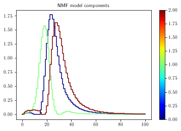
building NMF model for histogram type chargeInner_PXLayer_3
size of training set: (50000, 100)
/cvmfs/sft.cern.ch/lcg/views/LCG_101swan/x86_64-centos7-gcc8-opt/lib/python3.9/site-packages/sklearn/decomposition/_nmf.py:312: FutureWarning: The 'init' value, when 'init=None' and n_components is less than n_samples and n_features, will be changed from 'nndsvd' to 'nndsvda' in 1.1 (renaming of 0.26).
warnings.warn(("The 'init' value, when 'init=None' and "
/cvmfs/sft.cern.ch/lcg/views/LCG_101swan/x86_64-centos7-gcc8-opt/lib/python3.9/site-packages/sklearn/decomposition/_nmf.py:1090: ConvergenceWarning: Maximum number of iterations 200 reached. Increase it to improve convergence.
warnings.warn("Maximum number of iterations %d reached. Increase it to"
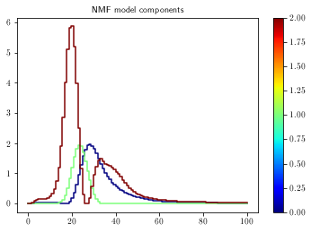
adding model "nmf" to the HistStruct
### evaluate the models on all histograms in the (non-extended) histstruct and on the partitions
# evaluate classifiers
print('evaluating classifiers')
histstruct.evaluate_classifiers( modelname )
histstruct.evaluate_classifiers( modelname, setnames=['partitions'] )
evaluating classifiers
### plot the multidemensional mse and fit a distribution
# set method and other properties
doplot = True
# initializations
dimslist = []
nhisttypes = len(histstruct.histnames)
for i in range(0,nhisttypes-1):
for j in range(i+1,nhisttypes):
dimslist.append((i,j))
plt.close('all')
# define training masks
training_masks = ['dcson','highstat']
# train the actual fitter
histstruct.set_fitter( modelname, SeminormalFitter.SeminormalFitter() )
histstruct.train_fitter( modelname, masknames=training_masks )
histstruct.evaluate_fitter( modelname )
# train and plot the partial fitters
if doplot:
histstruct.train_partial_fitters( modelname, dimslist, masknames=training_masks )
for dims in dimslist:
fig,ax = histstruct.plot_partial_fit( modelname, dims,
clusters=[{'masknames':training_masks}],
colors=['b'],
labels=['Training lumisections'],
logprob=True, clipprob=True,
xlims=30, ylims=30,
onlypositive=True, transparency=0.5,
xaxtitle=pu.make_text_latex_safe(histstruct.histnames[dims[0]])+' MSE', xaxtitlesize=12,
yaxtitle=pu.make_text_latex_safe(histstruct.histnames[dims[1]])+' MSE', yaxtitlesize=12,
caxtitle='Logarithm of probability density', caxtitlesize=12)
pu.add_cms_label( ax, pos=(0.05,0.9), extratext='Preliminary', fontsize=12, background_alpha=0.75 )
pu.add_text( ax, 'Density fit of lumisection MSE', (0.05,0.8), fontsize=12, background_alpha=0.75 )
pu.add_text( ax, '2017 (13 TeV)', (0.73,1.01), fontsize=12 )
#plt.close('all') # release plot memory
/eos/home-l/llambrec/SWAN_projects/ML4DQM-DC/tutorials/../utils/plot_utils.py:904: RuntimeWarning: divide by zero encountered in log
if logprob: evalpoints = np.log(evalpoints)
NOTE: scores of -inf were reset to -745.4400719213812

### extend the test set using artificial data generation and evaluate the model on the extended test set
# make the extra data
trainingmasknames = ['dcson','highstat']
for histname in histstruct.histnames:
print('generating data for '+histname)
# good data option 1: resample partitions
#goodhists = histstruct.get_histograms( setnames=['partitions'], histname=histname )
#(goodexthists,_,_) = gdu.upsample_hist_set( goodhists, ntarget=nbadruns*5e3, fourierstdfactor=20., doplot=False)
# good data option 2: use training set
goodexthists = histstruct.get_histograms( histname=histname, masknames=trainingmasknames )
histstruct.add_exthistograms( 'test_good_ext', histname, goodexthists, overwrite=True )
for badrun in badrunsls.keys():
badhists = histstruct.get_histograms( histname=histname,masknames=['dcson','highstat','bad{}'.format(badrun)] )
(badexthists,_,_) = gdu.upsample_hist_set( badhists, ntarget=5e3, fourierstdfactor=20., doplot=False)
histstruct.add_exthistograms( 'test_bad{}_ext'.format(badrun), histname, badexthists, overwrite=True )
# evaluate the classifiers
print('evaluating classifiers')
histstruct.evaluate_classifiers( modelname, setnames=['test_good_ext'] )
# shortcut if using training set as good test set: copy scores
#histstruct.models[modelname].scores['test_good_ext'] = histstruct.get_scores( modelname, masknames=trainingmasknames )
for badrun in badrunsls.keys():
histstruct.evaluate_classifiers( modelname, setnames=['test_bad{}_ext'.format(badrun)])
# evaluate the fitter
print('evaluating fitter')
histstruct.evaluate_fitter( modelname, setnames=['test_good_ext'] )
for badrun in badrunsls.keys():
histstruct.evaluate_fitter( modelname, setnames=['test_bad{}_ext'.format(badrun)] )
generating data for chargeInner_PXLayer_2
generating data for chargeInner_PXLayer_3
evaluating classifiers
evaluating fitter
### (re-)define the test set
badrunstokeep = [
"297287",
"297288",
"297289",
"299316",
"299317",
"299318",
"299324",
"299325",
"299326",
"300373",
"300374",
"300397",
"300398"
]
# make a new mask that is the union of the selected bad runs
histstruct.remove_mask( 'badselected' )
histstruct.add_mask( 'badselected', histstruct.get_union_mask(['bad{}'.format(badrun) for badrun in badrunstokeep]) )
# training set
trainset_args = {'masknames': training_masks}
goodset_args = {'setnames': ['test_good_ext']}
badset_args = {'setnames': ['test_bad{}_ext'.format(badrun) for badrun in badrunstokeep]}
badset_parts_args = []
for badrun in badrunstokeep:
badset_parts_args.append( {'setnames': ['test_bad{}_ext'.format(badrun)]} )
# get the log probability for good set
prob_good = histstruct.get_globalscores( modelname, **goodset_args )
logprob_good = np.log(prob_good)
# get the log probability for bad set
prob_bad = histstruct.get_globalscores( modelname, **badset_args )
logprob_bad = np.log(prob_bad)
print('--- good lumesections ---')
print('length of log prob array: '+str(len(logprob_good)))
print('minimum of log prob: '+str(np.min(logprob_good)))
print('--- bad lumisections ---')
print('length of log prob array: '+str(len(logprob_bad)))
print('maximum of log prob: '+str(np.max(logprob_bad)))
WARNING in HistStruct.remove_mask: name badselected is not in list of masks...
--- good lumesections ---
length of log prob array: 211171
minimum of log prob: -inf
--- bad lumisections ---
length of log prob array: 64814
maximum of log prob: 18.192293308278305
/tmp/ipykernel_27081/3315064921.py:33: RuntimeWarning: divide by zero encountered in log
logprob_good = np.log(prob_good)
/tmp/ipykernel_27081/3315064921.py:36: RuntimeWarning: divide by zero encountered in log
logprob_bad = np.log(prob_bad)
### make 1D score (MSE) distributions for all histogram types
for i,histname in enumerate(histstruct.histnames):
fig,axs = plt.subplots(ncols=3, figsize=(15,4))
scores_train = histstruct.get_scores( modelname, histname=histname, **trainset_args )
scores_good = histstruct.get_scores( modelname, histname=histname, **goodset_args )
scores_bad = histstruct.get_scores( modelname, histname=histname, **badset_args )
# plot training and good set
scores = np.concatenate((scores_train,scores_good))
labels = np.concatenate((np.ones(len(scores_train)),np.zeros(len(scores_good))))
pu.plot_score_dist( scores, labels,
fig=fig, ax=axs[0],
nbins=100, normalize=True,
siglabel='Training set', sigcolor='b',
bcklabel='Good test set', bckcolor='g',
title=None,
xaxtitle='Mean squared error', xaxtitlesize=14,
yaxtitle='Number of lumisections (normalized)', yaxtitlesize=14,
legendsize=15,
doshow=False)
pu.add_cms_label( axs[0], pos=(0.02,1.01), extratext='Preliminary', fontsize=16 )
pu.add_text( axs[0], pu.make_text_latex_safe(histname), (0.95,0.65), fontsize=15, horizontalalignment='right' )
pu.add_text( axs[0], '2017 (13 TeV)', (1,1.01), fontsize=14, horizontalalignment='right' )
# plot training and bad set
scores = np.concatenate((scores_train,scores_bad))
labels = np.concatenate((np.ones(len(scores_train)),np.zeros(len(scores_bad))))
pu.plot_score_dist( scores, labels,
fig=fig, ax=axs[1],
nbins=100, normalize=True,
siglabel='Training set', sigcolor='b',
bcklabel='Bad test set', bckcolor='r',
title=None,
xaxtitle='Mean squared error', xaxtitlesize=14,
yaxtitle='Number of lumisections (normalized)', yaxtitlesize=14,
legendsize=15,
doshow=False)
pu.add_cms_label( axs[1], pos=(0.02,1.01), extratext='Preliminary', fontsize=16 )
pu.add_text( axs[1], pu.make_text_latex_safe(histname), (0.95,0.65), fontsize=15, horizontalalignment='right' )
pu.add_text( axs[1], '2017 (13 TeV)', (1,1.01), fontsize=14, horizontalalignment='right' )
# plot good and bad set
scores = np.concatenate((scores_good,scores_bad))
labels = np.concatenate((np.ones(len(scores_good)),np.zeros(len(scores_bad))))
pu.plot_score_dist(scores, labels, fig=fig, ax=axs[2],
nbins=100, normalize=True,
siglabel='Good test set', sigcolor='g',
bcklabel='Bad test set', bckcolor='r',
title=None,
xaxtitle='Mean squared error', xaxtitlesize=14,
yaxtitle='Number of lumisections (normalized)', yaxtitlesize=14,
legendsize=15,
doshow=False)
pu.add_cms_label( axs[2], pos=(0.02,1.01), extratext='Preliminary', fontsize=16 )
pu.add_text( axs[2], pu.make_text_latex_safe(histname), (0.95,0.65), fontsize=15, horizontalalignment='right' )
pu.add_text( axs[2], '2017 (13 TeV)', (1,1.01), fontsize=14, horizontalalignment='right' )
fig.subplots_adjust(wspace=0.3, hspace=0.3)
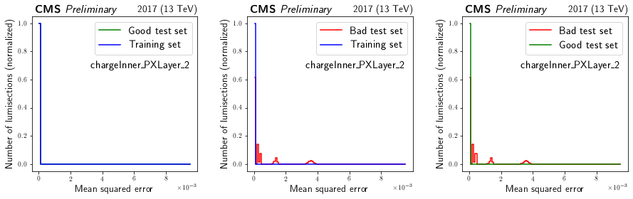
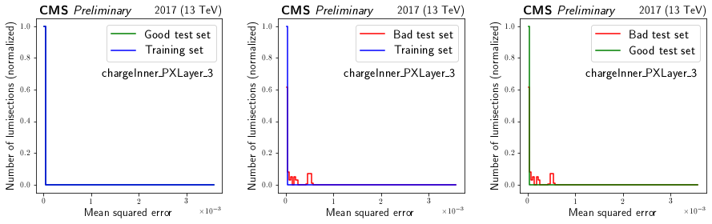
### make a new plot of probability contours and overlay data points
doplot = True
if doplot:
# initializations
plt.close('all')
colormap = mpl.cm.get_cmap('Reds')
colorlist = [colormap(i) for i in np.linspace(0.3,0.9,num=len(badrunstokeep))]
if len(colorlist)<len(badrunstokeep):
raise Exception('ERROR: need more colors...')
clusters = []
labels = []
colors = []
# add good set
clusters.append(goodset_args)
colors.append('green')
labels.append('Averages of training set')
# add bad sets
for j,run in enumerate(badrunstokeep):
clusters.append(badset_parts_args[j])
labels.append('Run {}'.format(run))
colors.append(colorlist[j])
# make the plots
for dims in dimslist:
fig,ax = histstruct.plot_partial_fit( modelname, dims,
clusters=clusters,
colors=colors,
labels=labels,
logprob=True, clipprob=True,
xlims=30, ylims=30,
onlypositive=True, transparency=0.5,
xaxtitle=pu.make_text_latex_safe(histstruct.histnames[dims[0]])+' MSE', xaxtitlesize=12,
yaxtitle=pu.make_text_latex_safe(histstruct.histnames[dims[1]])+' MSE', yaxtitlesize=12,
caxtitle='Logarithm of probability density', caxtitlesize=12)
pu.add_cms_label( ax, pos=(0.05,0.9), extratext='Preliminary', fontsize=12, background_alpha=0.75 )
pu.add_text( ax, 'Density fit of lumisection MSE', (0.05,0.8), fontsize=12, background_alpha=0.75 )
pu.add_text( ax, '2017 (13 TeV)', (0.73,1.01), fontsize=12 )
#plt.close('all') # release plot memory
/eos/home-l/llambrec/SWAN_projects/ML4DQM-DC/tutorials/../utils/plot_utils.py:904: RuntimeWarning: divide by zero encountered in log
if logprob: evalpoints = np.log(evalpoints)
NOTE: scores of -inf were reset to -745.4400719213812
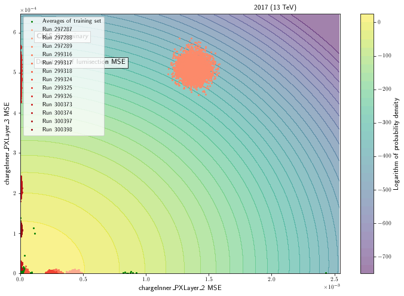
### make a roc curve based on the test results above
labels_good = np.zeros(len(logprob_good)) # background: label = 0
labels_bad = np.ones(len(logprob_bad)) # signal: label = 1
labels = np.concatenate((labels_good,labels_bad))
scores = np.concatenate((-logprob_good,-logprob_bad))
scores = aeu.clip_scores( scores )
# plot score distribution
fig,ax = pu.plot_score_dist(scores, labels,
siglabel='Anomalous', sigcolor='r',
bcklabel='Good', bckcolor='g',
nbins=250, normalize=True,
xaxtitle='Negative logarithmic probability', xaxtitlesize=15,
yaxtitle='Number of lumisections (normalized)', yaxtitlesize=15,
legendsize=15,
doshow=False)
ax.set_yscale('log')
pu.add_cms_label( ax, pos=(0.02,1.01), extratext='Preliminary', fontsize=16 )
pu.add_text( ax, 'Combined model output score', (0.1,0.65), fontsize=15 )
pu.add_text( ax, '2017 (13 TeV)', (1,1.01), fontsize=14, horizontalalignment='right' )
plt.show()
# plot ROC curve
(auc,sigeff,bkgeff,sigeff_unc) = aeu.get_roc(scores, labels,
mode='geom', doprint=False,
bootstrap_samples=100,
doplot=False, returneffs=True)
fig,ax = pu.plot_roc( sigeff, bkgeff, sig_eff_unc=sigeff_unc,
xaxtitle='False anomaly rate', xaxtitlesize=15,
yaxtitle='True anomaly efficiency', yaxtitlesize=15, doshow=False
)
auctext = '{:.3f}'.format(auc)
if auc>0.99: auctext = '1 - '+'{:.3e}'.format(1-auc)
pu.add_cms_label( ax, pos=(0.02,1.01), extratext='Preliminary', fontsize=16 )
pu.add_text( ax, '2017 (13 TeV)', (1,1.01), fontsize=14, horizontalalignment='right' )
pu.add_text( ax, 'Combined model ROC curve', (0.95,0.25), fontsize=15, horizontalalignment='right' )
pu.add_text( ax, 'AUC: {}'.format(auctext), (0.95,0.15), fontsize=15, horizontalalignment='right' )
plt.show()
#wp = aeu.get_confusion_matrix(scores, labels, wp='maxauc')
#wp = aeu.get_confusion_matrix(scores, labels, wp=0)
#print('working point: {}'.format(wp))
NOTE: scores of +inf were reset to 745.4400719213812
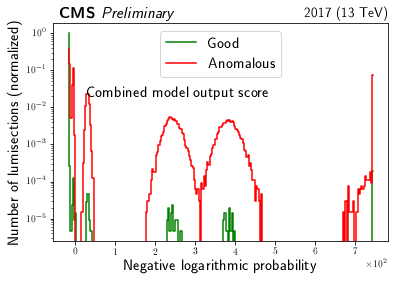
calculating ROC curve on 100 bootstrap samples of size 275985
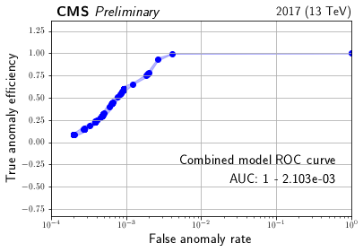
### investigate particular lumisections
# initialization: general
mode = 'ls'
run = 299316
# for mode 'ls' (ignored if mode is 'run'):
ls = 70
# for mode 'run' (ignored if mode is 'ls'):
run_masknames = ['dcson','highstat']
# initialization: reference scores
plot_refscores = True
refscore_masknames = ['dcson','highstat']
# initialization: reference histograms
refhists = {}
for histname in histstruct.histnames:
refhists[histname] = hu.averagehists( histstruct.get_histograms( histname=histname, masknames=['highstat','dcson']), 50 )
if mode=='ls':
# plot this particular run/ls
fig,axs = histstruct.plot_ls( run, ls, recohist=None, refhists=refhists,
opaque_legend=True,
titledict = titledict, titlesize=15,
ncols = 3,
physicalxax = True,
xaxtitledict = xaxtitledict, xaxtitlesize=17,
yaxtitledict = yaxtitledict, yaxtitlesize=17,
ymaxfactor = 1.3,
legendsize = 13
)
# stylistic modifications
counter = -1
for i in range(axs.shape[0]):
for j in range(axs.shape[1]):
counter += 1
if counter>=len(histstruct.histnames): break
ax = axs[i,j]
pu.add_cms_label( ax, pos=(0.02,1.01), extratext='Preliminary', fontsize=16 )
pu.add_text( ax, extratextdict[histstruct.histnames[counter]], (0.95,0.6), fontsize=15, horizontalalignment='right' )
pu.add_text( ax, '2017 (13 TeV)', (1,1.01), fontsize=14, horizontalalignment='right' )
fig.subplots_adjust(wspace=0.3, hspace=0.3)
plt.show()
# only for moment classifier: do some prints
#hist = histstruct.histograms['chargeInner_PXLayer_2'][histstruct.get_index(run,ls)]
#histstruct.classifiers['chargeInner_PXLayer_2'].printout(hist)
# print the mses
msepoint = histstruct.get_scores_ls( modelname, run, ls )
logprob = np.log( histstruct.evaluate_fitter_on_point( modelname, msepoint ) )
print('-------------')
print('MSE values:')
for histname in histstruct.histnames: print('{} : {}'.format(histname,msepoint[histname]))
print('-------------')
print('logprob: '+str(logprob))
# plot mse distribution
if plot_refscores:
fig,axs = histstruct.plot_ls_score( modelname, run, ls, masknames=refscore_masknames,
nbins=100, normalize=True,
siglabel='This lumisection', bcklabel='All lumisections',
sigcolor='k', bckcolor='b',
title=None,
xaxtitle='MSE', xaxtitlesize=15,
yaxtitle='Normalized number of lumisections', yaxtitlesize=15,
doshow=False)
# stylistic modifications
counter = -1
for i in range(axs.shape[0]):
for j in range(axs.shape[1]):
counter += 1
if counter>=len(histstruct.histnames): break
ax = axs[i,j]
pu.add_cms_label( ax, pos=(0.02,1.01), extratext='Preliminary', fontsize=16 )
pu.add_text( ax, extratextdict[histstruct.histnames[counter]], (0.95,0.6), fontsize=15, horizontalalignment='right' )
pu.add_text( ax, '2017 (13 TeV)', (1,1.01), fontsize=14, horizontalalignment='right' )
fig.subplots_adjust(wspace=0.3, hspace=0.3)
if mode=='run':
# plot given run
runnbs = histstruct.get_runnbs( masknames=run_masknames )
lsnbs = histstruct.get_lsnbs( masknames=run_masknames )
runsel = np.where(runnbs==run)
lsnbs = lsnbs[runsel]
print('plotting {} lumisections...'.format(len(lsnbs)))
for lsnb in lsnbs:
fig,ax = histstruct.plot_ls(run, lsnb, recohist=None, refhists=refhists, opaque_legend=True )
plt.show()
msepoint = histstruct.get_scores_ls( modelname, run, lsnb )
msepointarray = np.array([msepoint[histname] for histname in histstruct.histnames])
logprob = np.log( histstruct.evaluate_fitter_on_point( modelname, msepoint ) )
print('-------------')
print('MSE values:')
for histname in histstruct.histnames: print('{} : {}'.format(histname,msepoint[histname]))
print('-------------')
print('logprob: '+str(logprob))
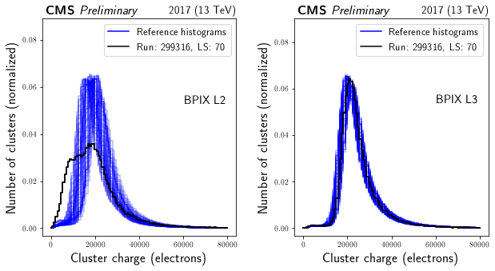
-------------
MSE values:
chargeInner_PXLayer_2 : [0.00027372]
chargeInner_PXLayer_3 : [4.50905996e-07]
-------------
logprob: 13.075970512248668
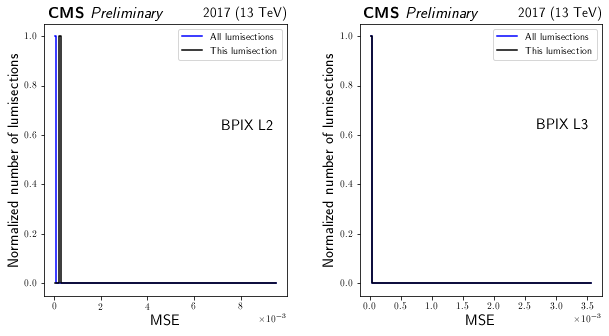
### investigate how the method performs on the golden/custom test set
# choose masks for evaluation set
masks_eval = ['golden', 'highstat']
# set logprob boundaries
logup = -100
logdown = None
# set whether to do plotting
doplot = True
nplotsmax = 10
# set properties of file to save
dosave = False
pdfname = ''
# get the lumisections within chosen logprob range
score_up = np.exp(logup) if logup is not None else None
score_down = np.exp(logdown) if logdown is not None else None
runsls_eval = len(histstruct.get_runnbs(masknames=masks_eval))
runsls_in_range = histstruct.get_globalscores_runsls( modelname, masknames=masks_eval,
score_up = score_up, score_down = score_down )
runnbs_in_range = runsls_in_range[0]
lsnbs_in_range = runsls_in_range[1]
print('{} out of {} LS are within these boundaries'.format(len(runnbs_in_range),runsls_eval))
if doplot:
# define reference histograms
refhists = {}
for histname in histstruct.histnames:
refhists[histname] = hu.averagehists( histstruct.get_histograms( histname=histname, masknames=['dcson','highstat'] ), 25 )
# make plots
from matplotlib.backends.backend_pdf import PdfPages
if dosave: pdf = PdfPages(pdfname)
for i,(runnb,lsnb) in enumerate(zip(runnbs_in_range, lsnbs_in_range)):
if i>=nplotsmax:
print('maximum number of plots reached')
break
print('------------------------')
# plot this particular run/ls
fig,axs = histstruct.plot_ls( runnb, lsnb, recohist=None, refhists=refhists, opaque_legend=True,
titledict = titledict, titlesize=15,
ncols = 3,
physicalxax = True,
xaxtitledict = xaxtitledict, xaxtitlesize=17,
yaxtitledict = yaxtitledict, yaxtitlesize=17,
ymaxfactor = 1.3,
legendsize = 13
)
# stylistic modifications
counter = -1
for i in range(axs.shape[0]):
for j in range(axs.shape[1]):
counter += 1
if counter>=len(histstruct.histnames): break
ax = axs[i,j]
pu.add_cms_label( ax, pos=(0.02,1.01), extratext='Preliminary', fontsize=16 )
pu.add_text( ax, extratextdict[histstruct.histnames[counter]], (0.95,0.6), fontsize=15, horizontalalignment='right' )
pu.add_text( ax, '2017 (13 TeV)', (1,1.01), fontsize=14, horizontalalignment='right' )
fig.subplots_adjust(wspace=0.3, hspace=0.3)
plt.show()
if dosave: pdf.savefig(fig)
msepoint = histstruct.get_scores_ls( modelname, runnb, lsnb )
msepointarray = np.array([msepoint[histname] for histname in histstruct.histnames])
logprob = np.log( histstruct.evaluate_fitter_on_point( modelname, msepoint ) )
print('-------------')
print('MSE values:')
for histname in histstruct.histnames: print('{} : {}'.format(histname,msepoint[histname]))
print('-------------')
print('logprob: '+str(logprob))
if dosave: pdf.close()
0 out of 201393 LS are within these boundaries